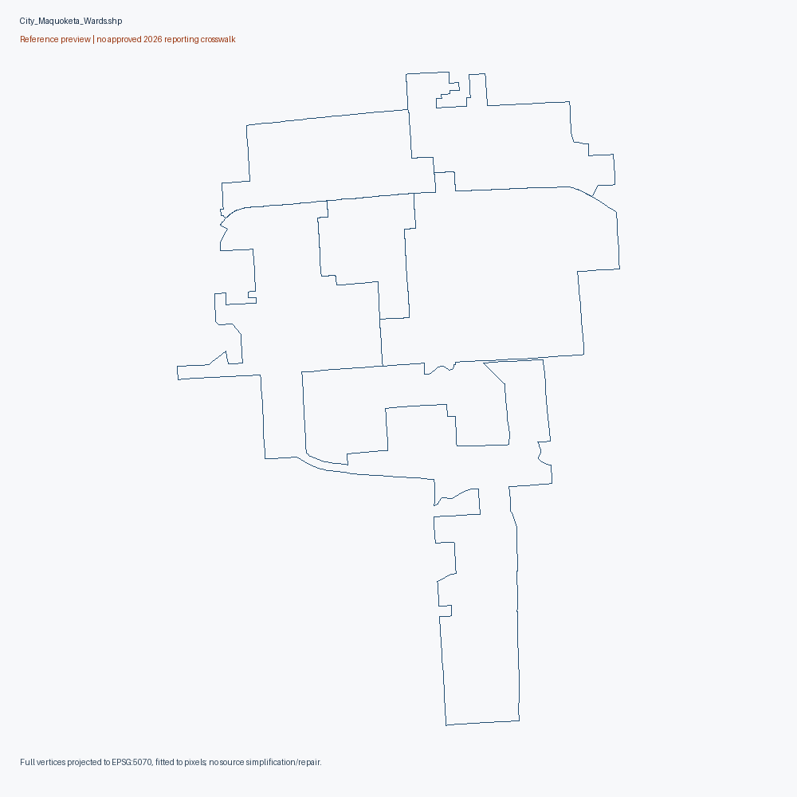
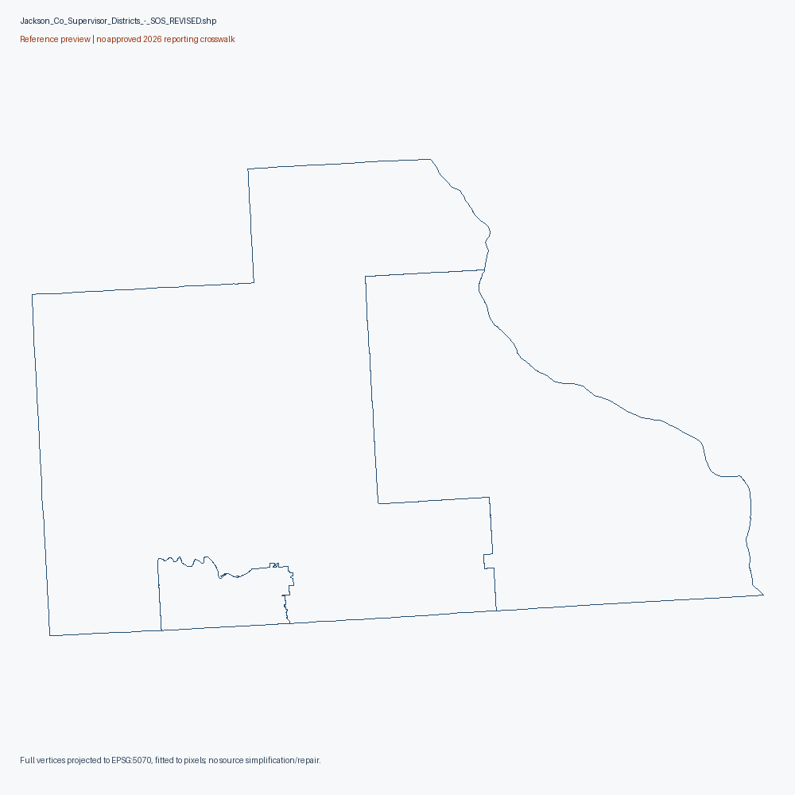

All counties
33. Jackson County
Reference maps. No approved November 2026 reporting-unit crosswalk.
SOS county ZIP rejected as supervisor districts. County PDF scan shows rural groups 1-8 without a Maquoketa ward inset; the separate five-ward ZIP is retained. Combined completeness and current equivalence remain unapproved.
Exact source-native diagnostics (gzip JSON)
Jackson County Precincts Map
actual map asset; extent/vintage must be read from map, no approved reporting crosswalk
Original source download Primary sourcesource PDF text/metadata retained in pdf-audit.json; edit/retrieval date is not adoption date

All rendered PDF pages (1)
Contact sheet 1
City of Maquoketa Wards (Precincts 9-13).zip
partial city reference, not countywide geometry
Original source download Primary sourcereprecincting-era SOS collection; source-specific legal effective date unknown
5 native records; 1352 vertices. Full native attributes/vertices

City of Maquoketa Wards (Precincts 9-13) (1).zip
reference geometry; current 2026 equivalence unapproved
Original source download Primary source2021/2022 reprecincting-era source publication; individual adoption/effective date unverified
5 native records; 1352 vertices. Full native attributes/vertices

Jackson County Precinct Boundaries.zip
sourceconflict: reject as precinct geometry
Native layer/attributes describe supervisor-scale districts; archive title is insufficient.
Original source download Primary source2021/2022 reprecincting-era source publication; individual adoption/effective date unverified
3 native records; 3337 vertices. Full native attributes/vertices

Historical source scopes
{
"2024/candidate_reporting_units": 13,
"2024/candidate_administrative_controls": 1,
"2024/registration_statistics_units": 13,
"2024/turnout_context_units": 13,
"2024/status_context_units": 13,
"2022/candidate_reporting_units": 13,
"2022/candidate_administrative_controls": 1,
"2022/registration_statistics_units": 13,
"2020/candidate_reporting_units": 16,
"2020/candidate_administrative_controls": 1,
"2020/registration_statistics_units": 16
}